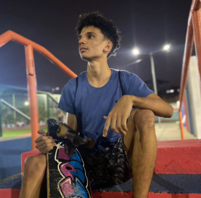

José Alberto -
- Desenvolvedor -
- Estudante de Ciência da Computação
Sobre mim
Quem sou eu?

Me chamo José Alberto, sou brasileiro, nascido em Paudalho, uma cidade do interior de Pernambuco.
Desde criança, sempre gostei de sonhar com meu futuro: emprego, família, sucesso...
No início, tinha um sonho de ser veterinário, pois sempre gostei dos animais, mas, convenhamos,
não sou corajoso e forte como um médico ou veterinário. Em outro momento da minha vida, sonhei, como todo
menino do Brasil, em ser jogador de futebol, mas esse é um sonho que poucos conseguem realizar.
Sempre gostei de trabalhar em equipe, seja em brincadeiras, projetos ou desafios com meus amigos.
A troca de ideias e o aprendizado conjunto sempre me motivaram a buscar mais conhecimento e alcançar
objetivos maiores.
Por muito tempo, durante minha adolescência, eu não sabia o que queria ser, até que um dos meus
melhores amigos instalou um software de criação de jogos em seu computador.
Embora meu primeiro contato com a programação não tenha sido tão bom, foi assim que decidi o rumo da minha
vida.
Hoje, quero ir além: desejo ser cientista da computação, quem sabe até me tornar mestre e doutor.
Além disso, tenho uma grande vontade de lecionar e compartilhar conhecimento, ajudando outras pessoas
a descobrirem suas paixões, assim como eu descobri a minha.
Porque eu gosto de programação?
Eu sempre gostei de criar coisas e, quando era criança, descobri num jogo minecraft os circuitos de redstone e passava horas fazendo portas e criando circuitos. Um pouco depois, comecei a acompanhar o canal de um youtuber, o Viniccius13, e minha mente explodiu para o minecraft. Entretanto, quando entrei no ensino médio tirei notas baixas em física e química porque eu estava desfocado demais..., mas no meu último ano na escola percebi o quanto gostava de física e vi o quanto a matemática para criação, é incrível! A partir de então fiquei muito focado em programação e xadrez.
Meu Portifólio
Este portfólio tem por finalidade publicar os meus projetos e estudos na intenção de em algum momento chamar atenção de uma empresa e, consequentemente, conseguir meu tão sonhado emprego.
Meus Projetos
The Potato:
!Informações de desenvolvimento!
The Potato é um jogo que estou desenvolvendo(deveria estar) desde dezembro de 2023, mas muitas coisas aconteceram e acabou que não deu para terminar. Ademais, vale dizer, que eu planejo continuar o jogo, produzir novos leveís, conquistas e quem sabe um multiplayer coop. Enfim, estou cursando ciência da computação e meus olhos ficaram doentes por muito tempo, por isso que ainda não terminei nenhuma nova versão do meu jogo.
Sobre The Potato:
The Potato(A Batata), conta a um história de um mundo onde na vida inteligente se desenvolveu das frutas, legumes, plantas, raízes. Neste mundo, existia uma aliança entre o reino batata inglesa e o reino da batata doce, mas o líder das batatas doces traíu o reino da batata inglesa que estava colonizando uma nova terra no emisfério norte do planeta. Todos as batatas inglesas foram presas ou feitas de escravos pelas às batatas doces e abandonaram o líder das batatas inglesas em terras distantes, desconhecidas e perigosas. Portanto, o objetivo do líder abandonado é superar os obstaculos e desáfios para assim reconquistar seu antigo povo de
O Menu Principal do jogo é fácil e intuitivo, praticidade e designer simples. Esta foi a versão do menu principal mais aceitável.
Novidades:
Esta é a primeira fase do jogo sendo desenvolvida. O tipo de locomoção é terrestre com dash e pulos.
Uma fase nova com uma jogabilidade nova. Fases em rios ou mares com jogabilidade aquática. Ademais, este tipo de nivel fará com que o player tenha que escolher entre atirar ou desviar.
Outra fase com novas jogabilidades é essa com o jetpack. Tipo de gameplay parecida com o famoso jogo FlappyBird.
A nova atualização trará o nível principal pronto, e outros dois modos novos, todos eles vão ter sistemas de dificuldade, tempo e conquistas.
Personagens:

Um grande líder e general do Império Solanum tuberosum foi traído por seu amigo, o general do Império Ipomoea batatas. Além disso, foi encurralado e abandonado nos terrores do mundo da glicose, mas ele vai voltar e reconquistar seu reino e s eu povo novamente.

Do reino Malus domestica Borkh, uma maçã, é rápida, louca e vai correr até você!

Do reino Musa spp, as bananas são especialistas em explosivos e, ao verem um inimigo, vão jogar bananas (TNT) neles.

Do grande Império Pyrus, o reino das Pêras, são ótimos voadores e especialistas em perseguição aérea.